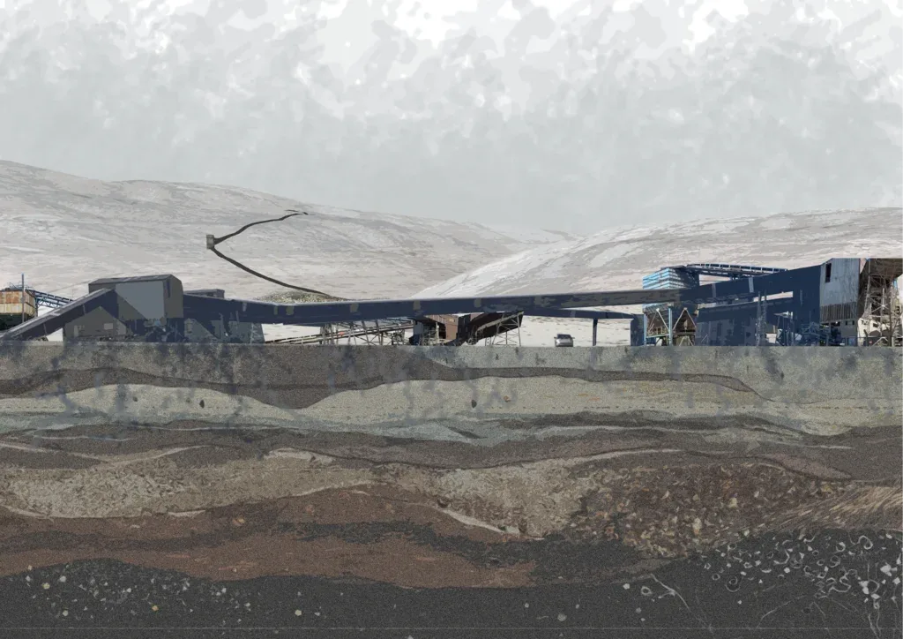
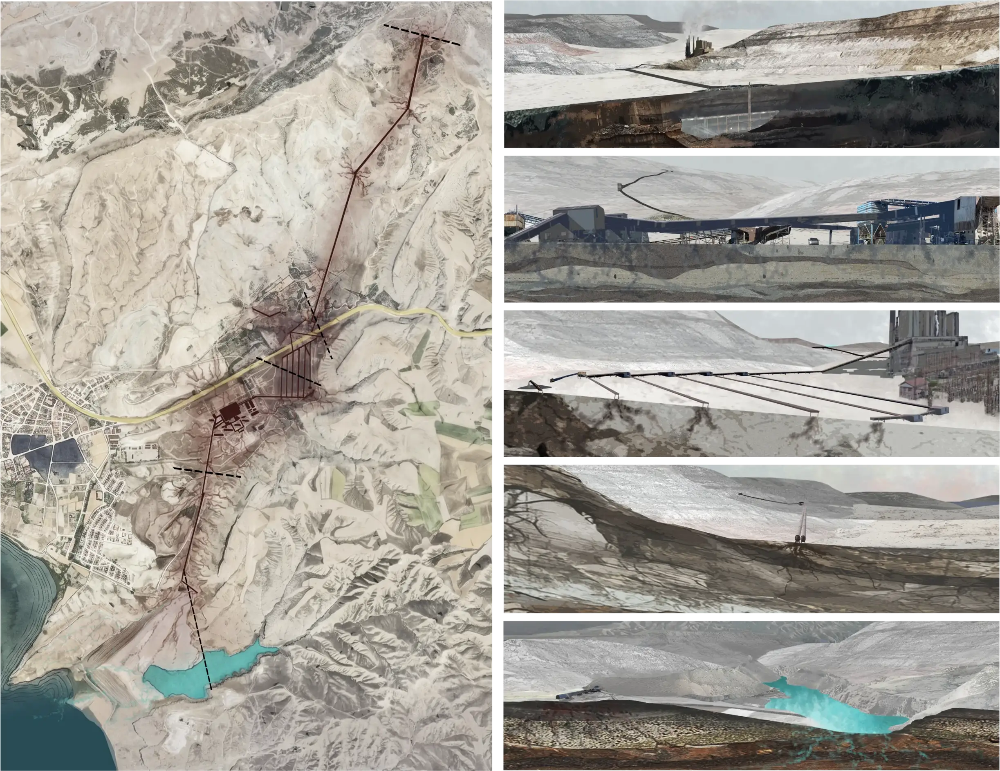
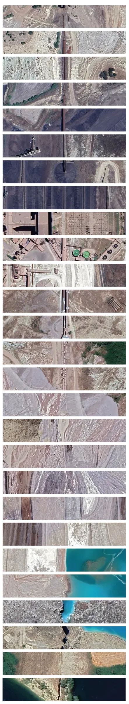
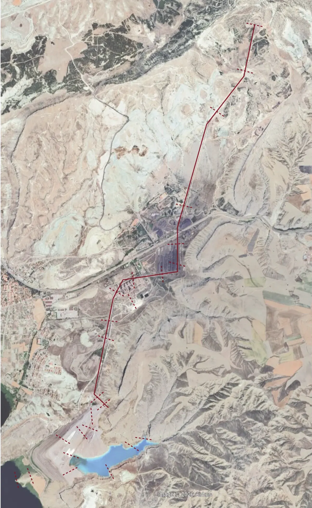
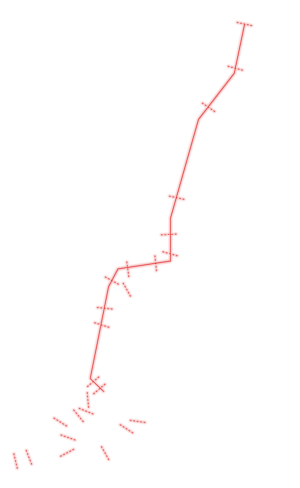

This image shows the ash transport infrastructure which is established on land by the 7.5 km long Overland Conveyor that locates from Çayırhan mine to the ash lake. While the structure linearly occupies the landscape, it turns the nodes where it anchors to the ground into transfer points that leak toxic substances and heavy metals into soil and diverses soil layers synthetically. The cross sections from the map illustrates the enormous scale of the conveyor on a spatial level through rendering artificial layering under ground. At the end, both the sections and map display the leakage of the structure of the ash and slag conveyor to the soil.
(Satellite view are used to create image)
Ahmet Soyak Belgehane. (2020, May 3). Çayırhan'da Mavi bir gölümüz varmış (03.11.2019)
Enprotek. (2022, March 24). EÜAŞ Çayırhan Termik Santrali kül konveyör hatları rehabilitasyonu. https://enprotek.com.tr/euas-cayirhan-termik-santrali-kul-konveyor-hatlari-rehabilitasyonu/
Karaca, A., Türkmen, C., Arcak, S., Haktanır, K., Topçuoğlu, B., & Yıldız, H. (2009). Çayırhan termik santralı emisyonlarının yöre topraklarının bazı ağır metal ve kükürt kapsamlarına etkilerinin belirlenmesi. Ankara Üniversitesi Çevrebilimleri Dergisi, 1(1).

This layout generates a sequential soil map through the path of the Overland Conveyor. The map shows how the soil changes radically due to the conveyor itself, from the darkness of the mining area to the artificial turquoise color of the ash lake.
(Satellite view are used to create image)


